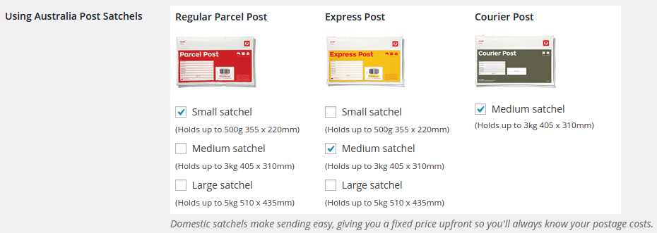

Overview
Australian Post WooCommerce Extension is a WordPress Plugin that integrate the Australian Post service, it will calculate the shipping cost and the delivery time for your customer.
Installation
Using The WordPress Dashboard
- Navigate to the 'Add New' in the plugins dashboard
- Search for 'Australian Post WooCommerce Extension'
- Click 'Install Now'
- Activate the plugin on the Plugin dashboard
Uploading in WordPress Dashboard
- Download the plugin zip file from here
- Navigate to the 'Add New' in the plugins dashboard
- Navigate to the 'Upload' area
- Select australian-post-woocommerce-extension.zip from your computer
- Click 'Install Now'
- Activate the plugin in the Plugin dashboard
Using FTP
- Download australian-post-woocommerce-extension.zip
- Extract the australian-post-woocommerce-extension directory to your computer
- Upload the australian-post-woocommerce-extension directory to the /wp-content/plugins/ directory
- Activate the plugin in the Plugin dashboard
Settings
Links Auto Replacer comes with several settings to make you take full control of the plugin, thus I will add more settings to cope with the new features. I will add more and more features in the next releases, so stay tuned :)
- Enable Auto Replcement: This option is a global switch for the plugin, If you want to disable the replacement of the keywords temporiraly without deactivating the whole plugin, you just need to uncheck this option.
- Dofollow? if you checked this option, you will allow search engines to follow this link and use it in ranking. It's simply add (rel=nofollow) if you unchecked it.
- Open in When the visitor click on the link, it's either open in a new window or the same window.
- Shrink? If you checked this option, the link will be shortened.
- Case Sensitive? The plugin will replace the keywords exactly according to the letters case.
Auto Links Management
Auto Links Table
This is the table where you find all your links, from this page you can (edit,delete) the link. Also, It will show the keywords of the link, the original link. You can go to this page from the Admin Menu (Auto Links --> All Auto Links)
Add Auto Link
"Auto Links" ↣ "Add New Auto Link"

This is the main page where you will add the links with the keywords.
- You can add one keywords or multiple keywords. To add another keyword, click on "Add Row" button and a text new text box will show up. Another keyword? click again on "Add Row"
- Now Add the required URL, When the visitor click on the keyword that you previously added, the plugin will take him to this URL.
- The other options I explained them in the Settings section
- Last thing, There is an option called slug, This one is disabled by default, but if you choosed to "shrink" the link, this option will be activated with an auto generated text, you can change it if you want.
Internal Linking PRO Feature

The PRO version of the plugin has a cool feature, For example, if you want to link the keywords to a specific post or page, you only need to change the link type to "internal" and then choose the post or page by typing its title in the bottom select list as you see in the image above.
Statistics PRO Feature


Even if the link was external, the plugin will be able to track the link and provides you with many statistics (Visits per day, Countries, Browsers, Operating Systems ). I will add more features in the statistics page in order to provide the plugin user of the maximum benefits of statistics and tracking.
Support
Do you have any problem? Did you encounter a bug in the plugin? Do you need a new feature to be included in the plugin? Do you feel talking about coffee or how the dinosaurs got extinct? - I'm serious -. Do NOT hesitate dropping me a support ticket.